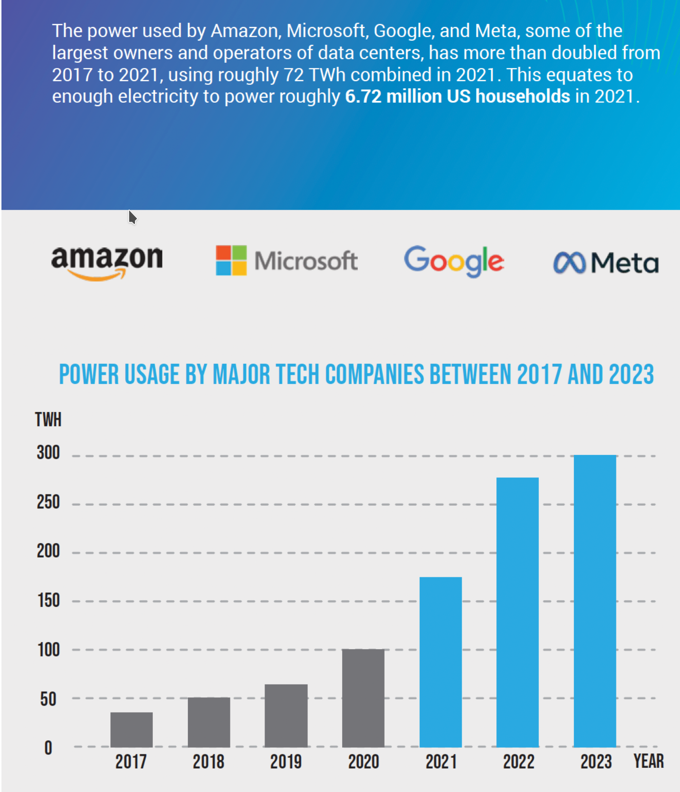
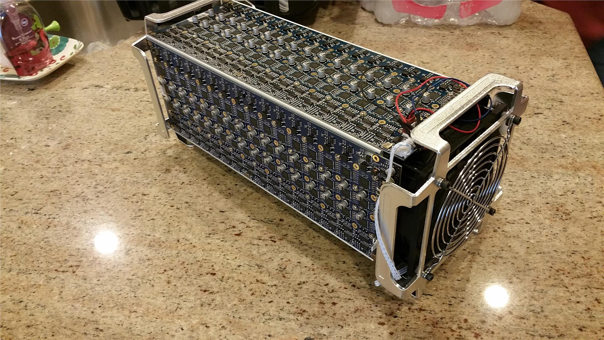

Performance as measured by Open Road for a custom processor versus a generic processor on a 2/3 Keys per leaf/branch B-Tree . The performance gap widens significantly as we increase the number of Keys in each branch and leaf in the B-Tree .
| Area μm² | Fmax MHz | Statements | |||
|---|---|---|---|---|---|
| Custom | Generic | Custom | Generic | Custom | Generic |
| 2467 | 12927 | 902 | 399 | 23 | 122 |
| 5.24 x Smaller | 2.26 x Faster | 5.30 * Compact Code | |||
| 62.76 x better | |||||
In the above area in micro-meters squared equates to power consumption while frequency in Mega Hertz equates to execution speed. And even better a find operation takes far fewer statements to execute on the custom CPU than it does on the generic CPU because the custom operation-codes are so much better adapted to manipulating a B-Tree .
Data Centers consume more electricity than they really need to.
Data Centers use one hundred times as much electricity as most other
businesses do
, according to the The Wall Street Journal.
Data Centers consume about 300 Tera Watt hours per year or 1% of world electricity production.
And this amount is steadily increasing year by year.

About equal to the combined total electricity consumed by these major cities:
| City | Annual Consumption (Terra Watt hours) | Percentage of Global Production (%) | Image | City | Annual Consumption (Terra Watt hours) | Percentage of Global Production (%) | Image |
|---|---|---|---|---|---|---|---|
| New York City | 53.65 TWh | 0.18% | Los Angeles | 46.3 TWh | 0.15% | ||
| Chicago | 40 TWh | 0.13% | Houston | 70 TWh | 0.23% | ||
| London | 40 TWh | 0.13% | Paris | 68.2 TWh | 0.23% | ||
| Total | 318.15 TWh | 1.06% |
As a consequence, Data Center operators like to locate themselves close to reliable supplies of cheap electricity. For example, Gmail is located near the Bonneville Dam in The Cascades, on the River Columbia, in Oregon.

Global electricity production currently amounts to $2 trillion annually - equivalent to the gdp of Italy.
Appa Apps Inc. is prototyping a specialized Silicon chip for use in Data Centers to performdatabaselook-ups 10 times faster while using 10 times less electricity than the generic computers currently in use.
Data Centers do a lot of database look-ups. Every company has a database nowadays and every company spends lots of time and money looking stuff up in their database, quickly, because their customers demand it.

If we could make database look-ups just a bit more efficient, Data Center operators would save quite a lot of money on their huge electricity bills - a saving of perhaps $100 million per year.
Today, everyone has a mobile phone with a Graphics Processing Unit implemented in Silicon rather thansoftware because the original, software-only versions were far too slow. And every personal computer has a Graphics Processing Unit for much the same reason.
Bitcoin mining used to be done using just software. At one time you could easily mine a few bitcoins every day with a generic notebook computer. Now, you need to use a factory full of specialized Bitcoin miners that do most of their processing in Silicon rather than in software.

Implementing database software effectively in Silicon will help Data Center operators be more competitive by reducing the cost and time spent doing database look-ups.
Appa Apps Inc. has recently succeeded in synthesizing and routing a Verilog version of the well known B-Tree database algorithm normally written in the C programming language ready for placement on an application specific integrated circuit .
Performance as measured by Open Road for the custom CPU versus a generic CPU on a 2/3 Keys per leaf/branch B-Tree . The performance gap widens as we increase the number of Keys in each branch and leaf of the B-Tree .
| Area μm² | Fmax MHz | Statements | |||
|---|---|---|---|---|---|
| Custom | Generic | Custom | Generic | Custom | Generic |
| 2467 | 12927 | 902 | 399 | 23 | 122 |
| 5.24 x Smaller | 2.26 x Faster | 5.30 * Compact Code | |||
| 62.76 x better | |||||
In the above area in micro meters squared equates to power consumption while frequency in mega hertz equates to execution speed. And even better a find operation takes far fewer statements to execute on the custom CPU than it does on the generic CPU because the custom operation-codes are so much better adapted to manipulating a B-Tree .
The layout of the custom CPU as produced by Open Road .

The layout of a generic CPU capable of executing the C programming language version of the B-Tree algorithm as produced by Open Road .

We aim to raise $1 million for a seed round to:
If they provide letters of intent to buy such chips, we will use them to drive a large Series A funding round to convert the Field Programmable Gate Array into an application specific integrated circuit implemented on Silicon chips to reduce the time and electricity consumed doing database look-ups even more effectively.
Just me and Chat GPT

Chat GPT is very useful as it does all the boring low-level coding, letting me concentrate on the problem of what, exactly, should be coded.
Appa Apps Inc. is a class C corporation registered in Austin, Texas.
No, none at all. Just creating the prototype has occupied me fully for the last two years with no time off for anything else.
Our business model is a pure Intellectual Property play. We would license the copyright to our design, allowing foundries to fabricate specialized Silicon chips to replace the generic ones currently in use fordatabaselookups in Data Centers. This approach mirrors the business model of industry leaders such as NVIDIA, ARM, and Qualcomm.
Our ideal customers are the top 10 hyperscale Data Center operators, such as:
Hyperscalers have enormous electricity bills, which is why they strategically locate their Data Centers near hydroelectric dams and nuclear power stations. They are well aware of the need to reduce electricity costs, as their shareholders demand it. As a result, they must invest in the most cost effective chips available. There is no other alternative except going out of business.
We are the best team to bring this solution to market because we have succeeded in producing a routable Verilog design when no else seems to have done so.
We need help in presenting our prototype effectively to the right people who are capable of making investment decisions.
https://github.com/philiprbrenan/btreeBlock